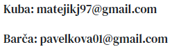

Kdy a Kde
Obřad:
Datum: 12. července 2025
Čas: 12:00
Místo: Hradištěk u Velkých Bílovic
Pokračovat budeme:
Místo: Vinařství U Madla, Velké Bílovice
Pozvánky vám samozřejmě předáme osobně, ale zatím řešíme praktické věci, jako je ubytování. Potřebujeme zjistit, kdo by měl zájem o ubytování, abychom vše mohli zařídit včas.
Budeme rádi, když tento výjimečný den strávíte s námi!

Program
Mil√≠ host√©, máme pro vás nachystaný program, co von√≠ v√≠nem a dobrou náladou. Pojƒète s námi pro≈æ√≠t tento krásný den! üåøüç∑
üîî 12:00 ‚Äì Obřad na Hradi≈°≈•ku V poledne sa potkáme na Hradi≈°≈•ku, kde si řekneme sv√© ‚Äûano‚Äú pod ≈°irým nebem, s výhledem, co vám vezme dech.
üöó Po obřadu ‚Äì Přesun do vinařstv√≠ Mádl Po slzách dojet√≠ sa přesuneme tam, kde zaƒç√≠ná ta pravá moravská zábava. ƒåeká vás pohostinnost Mádlova vinařstv√≠ a celý den plný dobr√©ho v√≠na a vesel√≠.
üé∂ Cimbálka a degustace Cimbálová muzika vám zahraje pěkně od srdca, a kdo bude chtět, m≈Ø≈æe zav√≠tat do skl√≠pku na ochutnávku Mádlových poklad≈Ø. A ≈æe jich tam maj√∫!
üç∑ Veƒçer ‚Äì Skl√≠pek a DJ Kdo nezapadne do skl√≠pku, ten rozhodně nesm√≠ prome≈°kat veƒçern√≠ tancovaƒçku. V pozděj≈°√≠ch hodinách nás rozproud√≠ DJ, co bude hrát, dokud nevydr≈æ√≠ posledn√≠ taneƒçn√≠k.
Tak přijƒète s dobrou náladou, nechajte starosti doma a připravte sa na den plný radosti, hudby a moravsk√©ho v√≠na! üçáüíÉ
Tƒõ≈°√≠me sa na vás! Novoman≈æel√© üòä

Ubytování
Pro rodinu
S radostí bychom vám chtěli oznámit, že naši svatbu pořádáme na našem vysněném místě. Uvědomujeme si, že není úplně blízko od vašeho bydliště, a proto jsme se zamysleli nad tím, jak to co nejvíce usnadnit.
Z praktických důvodů – zejména proto, že každý by mohl chtít svatbu opustit v jiný moment – jsme dospěli k závěru, že bude nejlepší, když vám místo dopravy zajistíme přespání v místě konání svatby ze soboty na neděli na náklady novomanželů samozřejmě.

Kontakt
Pro jakékoliv dotazy se nám určitě ozvěte telefonicky nebo na mail.
